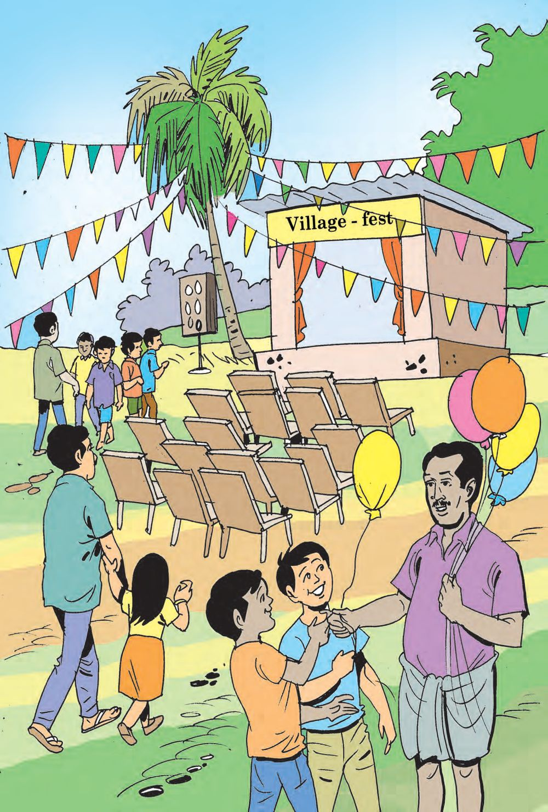
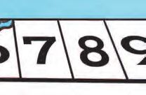
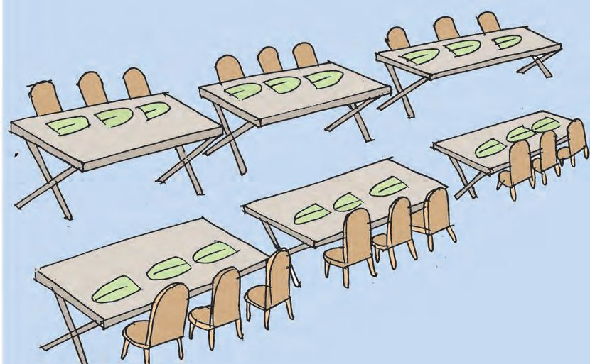
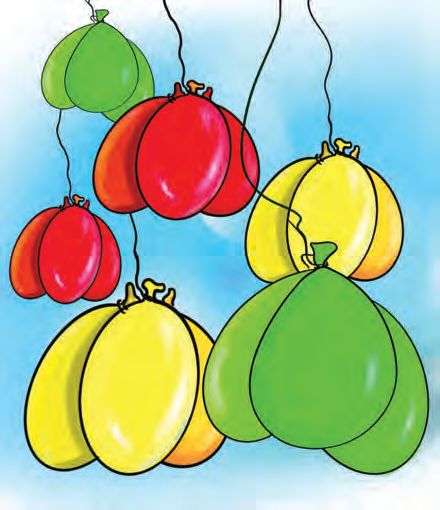
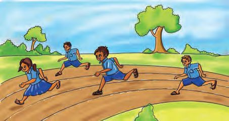
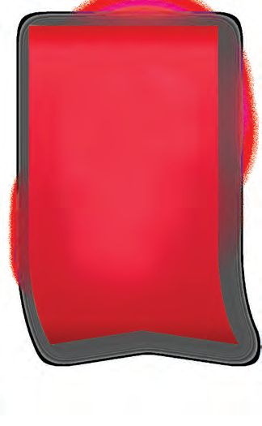
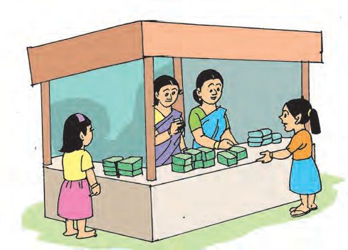
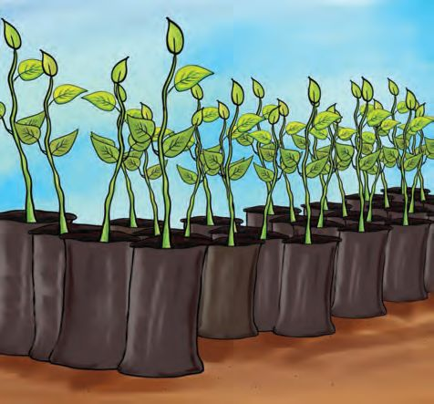
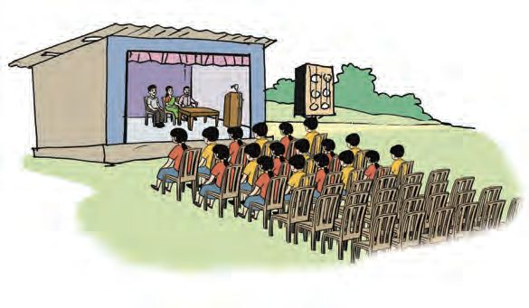

6 Adding... And Adding Again
Page 75

Page 76



Mathematics Standard - III
Village-fest Village-fest is being held at Nanmamukku. There are all kinds of contests for kids. Anu and Allen are in the leaping contest.
Anu is jumping on alternate rectangles, without stepping on the lines. She gets the gooseberries on the rectangles she covers. Colour the rectangles Anu has covered. Allen is competing in the contest for senior kids. In it, one has to skip across four rectangles in every leap. Each such rectangle has 5 gooseberries. Let’s complete this table. Leap
1
Gooseberries Anu got
2
Gooseberries Allen got
5
2
3
4
5
6
Quiz There are ten teams for the quiz, and each team has two kids. How many in all?
76
Page 77


Adding... And Adding Again
Lunch
Look at the picture. How many plantain leaves are set up for lunch? How did you calculate?
How many leaves are there on a table? How many tables are there? How many leaves are there? With one more table, how many leaves can be set up?
77
Page 78


Mathematics Standard - III
Balloons See how three balloons of the same colour are tied together. How many balloons in all?
Look at the picture and write the number of balloons of the same colour in the table. 3+3
How many balloons in all? How did you calculate?
78
2×3
6
Page 79


Adding... And Adding Again
Complete the table
93 =
2 times 3
23
6
3+3+3+ 3+ 3
5 times 3
53
15
100 3 = 300
102 3 = 306 103 3 = ......... ............................
11 3 =
110 3 = ......... 120 3 = .........
12 3 =
3
3+3
101 3 = 303 10 3 =
1×3
............................
79
How I calculated
Page 80

Mathematics Standard - III
Different ways Two threes together
2×3
Three doubled
6
Three repeated twice
2 times 3
Doubling 3 doubled
3+3
4 doubled 5 doubled 10 doubled 20 doubled 25 doubled 50 doubled 100 doubled What I understood from the table.
80
2×3
6
Page 81




Adding... And Adding Again
Kudumbashree Stall Sale! 4 bars of soap for Rs.50
After lunch, Anu went to the Kudumbashree stall. They are making packets of soap bars, 4 in each. They want to make 5 packets. How many bars do they need? What I calculated:
Relay race 4 teams competed in the relay race. Each team has 4 runners. How many in all for the races?
3 fives is equal to how many threes?
81
Page 82


Mathematics Standard - III
Prize Distribution Those who have come first in the competitions are to be given 4 vegetable seedlings each. There were 7 competitions. How many seedlings are needed?
Five 4’s make
4+4+4+4+4
Six 4’s make
4+4+4+4+4+4
Ten 4’s make
×
5 × 4 = 20
Twelve 4’s make
×
=
=
14 × 4 =
16 × 4 =
18 × 4 =
20 × 4 =
15 × 4 =
13 × 4 =
82
Page 83


Adding... And Adding Again
Final meeting See how chairs are arranged for the meeting. There are 6 chairs in each row. The children sit in the first three rows. How many children are there?
6+6+6
=
3×6
=
How many can sit in the next six rows? =
=
Children sat in these rows too. How many children would be there in all? Another method
How I calculated
There are 10 more rows to be filled. How many more can sit there? What is the total number of people that can sit there?
83
Page 84

Mathematics Standard - III
Multiply and fill up the table ×
1
3
2
4
5
6
7
8
9
10
1 12
2 12
3 4
12
5 6
12
Add or multiply 1+1 = 2 1×1 = 1 2+3 = 5 2×3 = 6 2+3+4 = 9
Here we get different numbers on adding and multiplying. Can you find numbers which give the same answer on adding and multiplying?
2 × 3 × 4 = 24
Look at each and fill up the rest. 2×3 = 6
2 × 4 = .....
2 × 5 = .....
2 × 6 = .....
4 × 3 = 12
4 × 4 = .....
4 × 5 = .....
4 × 6 = .....
8 × 3 = 24
8 × 4 = .....
8 × 5 = .....
8 × 6 = .....
What relations can you find out?
84
Page 85


Adding... And Adding Again
What numbers multiplied together give 12 ?
What numbers multiplied together give 24 ?
26
1 24
...... 1
12
24
...... ...... 3 ...... 2
Can you write 20 like this?
Fill up the cells 20 .......
6 .......
30 .......
60
15 .......
....... 1
12 .......
Evaluation activities 1. Anu went to the supermarket. She wanted five pens. The price
of one pen was 6 rupees and the price of a packet of 6 pens was 30 rupees. How much would Anu gain if she bought a packet?
85
Page 86


Mathematics Standard - III
2. Cricket match
A. In a cricket match, one over means bowling six balls. How many balls does a team bowl in a twenty-twenty match? B. In a one day match, in which each team bowls 50 overs, how many balls are bowled in all?
3. Who got more runs?
The table below shows the runs scored by Allen and his friend in a cricket match. Allen
Friend
2 sixers
26
4 sixers
5 fours
54
3 fours
4 doubles
42
2 doubles
5 singles
51
2 singles
12
Who got more runs ?
How many more?
If all the balls in an over are hit for sixers, how many runs will they get?
86
Page 87

CONSTITUTION OF INDIA Part IV A FUNDAMENTAL DUTIES OF CITIZENS
ARTICLE 51 A Fundamental Duties- It shall be the duty of every citizen of India: (a) to abide by the Constitution and respect its ideals and institutions, the National Flag and the National Anthem; (b) to cherish and follow the noble ideals which inspired our national struggle for freedom; (c) to uphold and protect the sovereignty, unity and integrity of India; (d) to defend the country and render national service when called upon to do so; (e) to promote harmony and the spirit of common brotherhood amongst all the people of India transcending religious, linguistic and regional or sectional diversities; to renounce practices derogatory to the dignity of women; (f) to value and preserve the rich heritage of our composite culture; (g) to protect and improve the natural environment including forests, lakes, rivers, wild life and to have compassion for living creatures; (h) to develop the scientific temper, humanism and the spirit of inquiry and reform; (i)
to safeguard public property and to abjure violence;
(j) to strive towards excellence in all spheres of individual and collective activity so that the nation constantly rises to higher levels of endeavour and achievements; (k) who is a parent or guardian to provide opportunities for education to his child or, as the case may be, ward between age of six and fourteen years.
Page 88